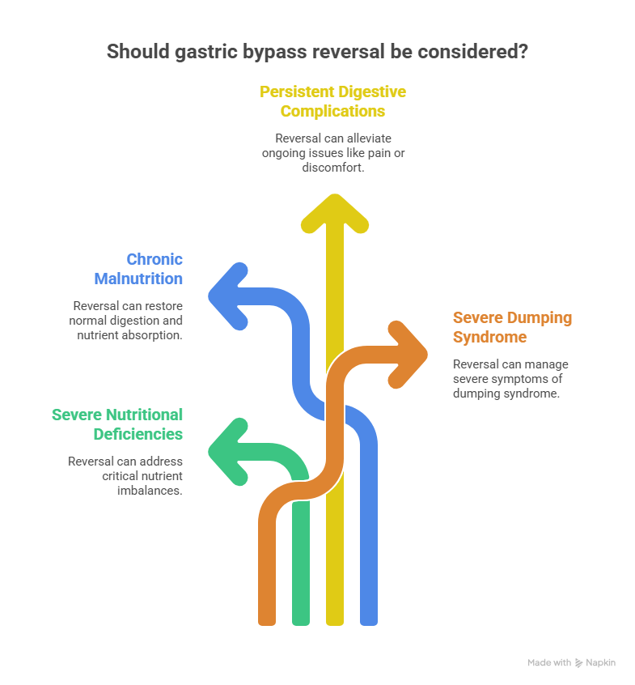
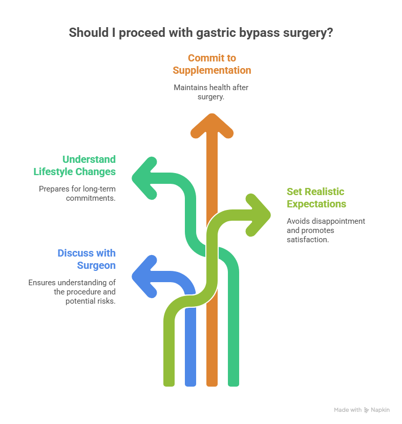

Gastric bypass surgery is one of the most effective and widely performed bariatric procedures worldwide. For individuals struggling with severe obesity and related health conditions, it has provided meaningful, long-term weight loss and significant improvement in medical problems such as type 2 diabetes, high blood pressure, sleep apnea, joint pain, and fatty liver disease. Beyond numbers on a scale, many patients experience improved energy levels, better mobility, enhanced confidence, and an overall better quality of life. Today, Gastric Bypass Surgery in Delhi is widely sought by patients looking for advanced surgical care combined with structured long-term follow-up.
Before undergoing surgery, however, it is completely natural for patients and families to ask important questions. One of the most common concerns is: Is gastric bypass surgery reversible? This question usually does not arise from doubt alone — it reflects a thoughtful desire to understand the procedure fully and feel reassured before making a life-changing decision. In this article, we will explore what reversibility truly means in medical terms, when reversal may be considered, what alternatives exist, and how patients can approach this decision with clarity and confidence.
Is Gastric Bypass Surgery Reversible?
Is gastric bypass surgery reversible? Learn when reversal is possible, why it is rare, and what patients should know before considering this option.
Book Your Appointment TodayUnderstanding Gastric Bypass Surgery
Gastric bypass, also known as Roux-en-Y gastric bypass, works by altering the structure
and function of the digestive system. The procedure involves two major components:
restriction and malabsorption, along with important hormonal changes.
During surgery:
- A small pouch is created from the upper portion of the stomach. This pouch becomes the new, smaller stomach.
- The small intestine is divided, and a portion of it is connected directly to the new stomach pouch.
- The remaining part of the stomach and the first segment of the small intestine are bypassed.
Because of these changes, patients feel full after eating smaller quantities of food. In
addition, the bypassed section reduces calorie and nutrient absorption to some extent.
Importantly, the surgery also influences gut hormones that regulate hunger, fullness, and
blood sugar control.
This is one reason gastric bypass is particularly effective in improving or even resolving
type 2 diabetes. The procedure is designed as a long-term treatment for obesity and
metabolic disease, not as a temporary measure.
What Does “Reversible” Mean in Medical Practice?
In everyday conversation, the word “reversible” often implies something that can be
easily undone, with everything returning exactly to its original state. In medicine,
however, the meaning is more nuanced.
Technically speaking, surgeons may be able to reconstruct the original anatomy in
selected cases. However, this does not mean the process is simple, risk-free, or
commonly performed. Gastric bypass permanently alters the digestive tract. Even if
anatomy is surgically restored, the body may not function exactly as it did before surgery.
Therefore, gastric bypass should always be viewed as a long-term commitment to health.
Reversal is not considered a routine option or a backup plan — it is reserved for very
specific medical situations.
Can Gastric Bypass Be Reversed?
Yes, reversal is technically possible. However, it is uncommon and considered only when there are serious medical reasons that cannot be managed through other treatments.
It is important to clarify what reversal is NOT typically done for:
- Weight regain alone
- Emotional hesitation or second thoughts
- Temporary digestive discomfort
- Lifestyle dissatisfaction
In such situations, doctors usually recommend structured nutritional counseling, behavioral support, medical therapy, or revision surgery rather than complete reversal.
When Might Reversal Be Considered?

Most patients never require reversal and do very well with appropriate follow-up care.
However, in rare cases, surgeons may evaluate reversal if significant complications
persist despite optimal medical treatment.
1. Severe Nutritional Deficiencies
After gastric bypass, lifelong vitamin and mineral supplementation is essential.
Most individuals maintain healthy levels with proper follow-up. In rare instances,
However, some patients may develop persistent deficiencies, such as severe iron deficiency
anemia, vitamin B12 deficiency, or calcium and vitamin D deficiency —
despite careful management.
If these deficiencies become severe and unresponsive to treatment, further surgical
Intervention may be considered.
2. Chronic Malnutrition
Very rarely, a patient may struggle with maintaining adequate protein and calorie intake
despite structured dietary planning and support. Signs may include excessive weight loss,
muscle wasting, profound weakness, and impaired immunity. In such uncommon cases,
the medical team may evaluate whether surgical modification is necessary
3. Persistent Digestive Complications
Some complications — such as strictures (narrowing at the connection site),
recurrent ulcers, or internal hernias — can occasionally occur. Most of these issues are
treatable with medication or minor corrective procedures. Only when they remain
unresolved after multiple interventions might a more extensive surgical solution be
discussed.
4. Severe, Refractory Dumping Syndrome
Dumping syndrome refers to symptoms that occur when food moves rapidly
from the stomach pouch into the small intestine. Mild symptoms are relatively common
and usually improve with dietary adjustments. Severe and persistent symptoms
that significantly impair quality of life — and do not respond to medical therapy —
may require further evaluation.
Revision Surgery vs. Complete Reversal
In many situations, revision surgery is preferred over full reversal. Revision procedures aim to correct a specific issue without restoring the original anatomy entirely.
- Resizing or reshaping the stomach pouch
- Correcting a narrowing (stricture)
- Treating ulcers surgically
- Modifying the intestinal connection
Revision procedures are generally less complex than complete reversal and often provide
effective solutions while preserving the metabolic benefits of gastric bypass.
Risks Associated with Reversal Surgery
Any repeat abdominal surgery carries higher technical complexity compared to a primary operation. Scar tissue, altered anatomy, and previous surgical connections increase the challenge. Potential risks include bleeding, infection, leakage at surgical sites, and longer recovery time.
For this reason, surgeons carefully weigh the risks and benefits before recommending reversal. Fortunately, such situations are rare, and most patients continue to do well with routine follow-up and adherence to nutritional guidelines.
Making an Informed Decision Before Surgery

Understanding the concept of reversibility should not create fear. Instead, it should
Empower patients to make informed decisions.
Before proceeding with gastric bypass, patients are encouraged to:
- Have detailed discussions with their bariatric surgeon
- Understand the long-term lifestyle and dietary commitments required
- Commit to lifelong supplementation and medical follow-up
- Set realistic expectations about weight loss and health outcomes
When performed for appropriate medical indications and supported by structured
Aftercare, gastric bypass remains one of the safest and most effective treatments for
severe obesity.
Long-term success depends not only on the surgery itself but also on the partnership
between the patient and the medical team. Education, follow-up, and consistency play
a vital role in maintaining excellent outcomes.
Is Gastric Bypass Surgery Reversible?
Is gastric bypass surgery reversible? Learn when reversal is possible, why it is rare, and what patients should know before considering this option.
Book Your Appointment TodayFinal Thoughts
Gastric bypass surgery is intended to be a lifelong metabolic solution. While reversal is technically possible, it is rare and reserved for carefully selected medical situations. It is not a routine option and is considered only when the benefits clearly outweigh the risks. With expert guidance from Dr. Atul Peters, patients are carefully evaluated and supported in making informed decisions before undergoing the procedure.
Rather than focusing primarily on reversibility, patients benefit more from understanding how the procedure works, what lifestyle changes are required, and how long-term follow-up ensures safety and success. With proper guidance, commitment, and ongoing care, gastric bypass continues to transform lives by improving health, mobility, and overall well-being.
Frequently Asked Questions
Is Gastric Bypass Surgery reversible?
Why would someone need a Gastric Bypass reversal?
Is Gastric Bypass reversal safe?
Can Gastric Bypass be reversed due to weight regain?
Is revision surgery better than reversal?
Will I gain weight after Gastric Bypass reversal?
Should I worry about reversibility before choosing surgery?
Recommended Further Reading
Have Personal Health Questions?
Consult with Dr. Atul Peters and our expert multidisciplinary team at Max Smart Super Speciality Hospital, Saket, New Delhi.
Book Your Consultation